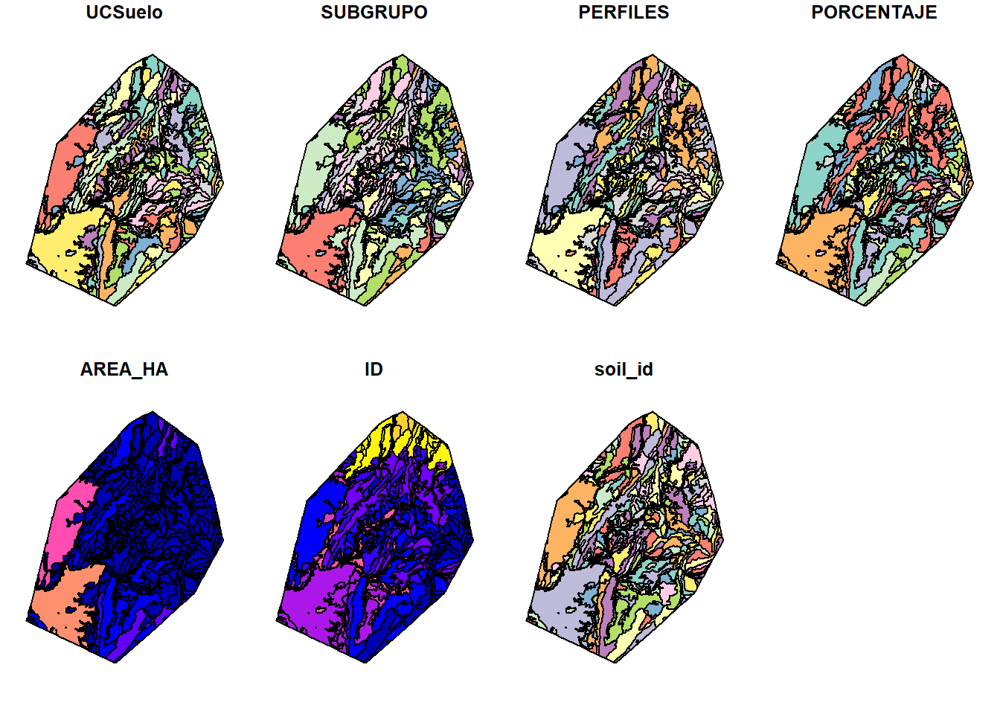
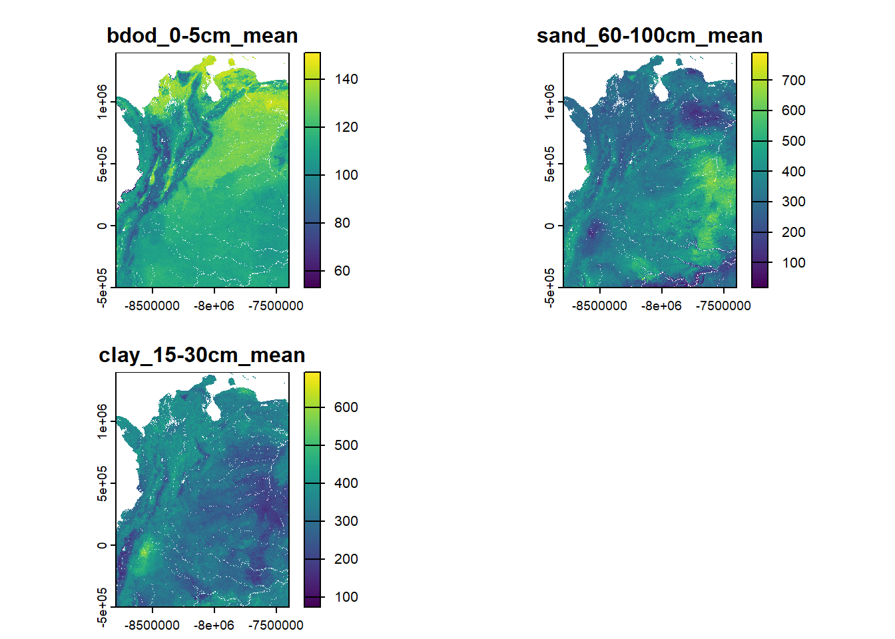
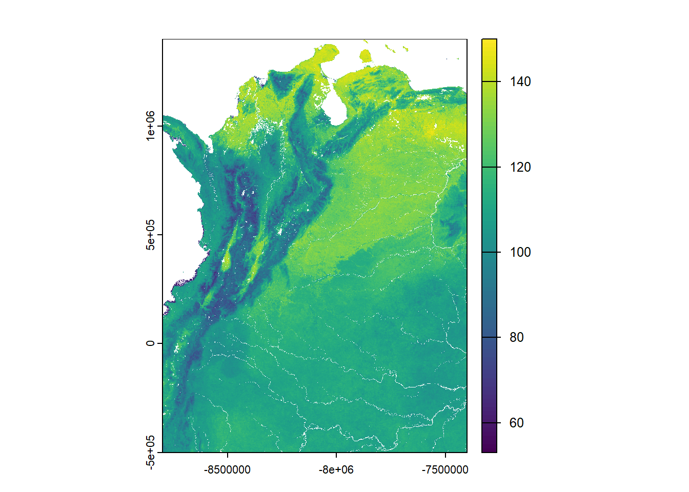
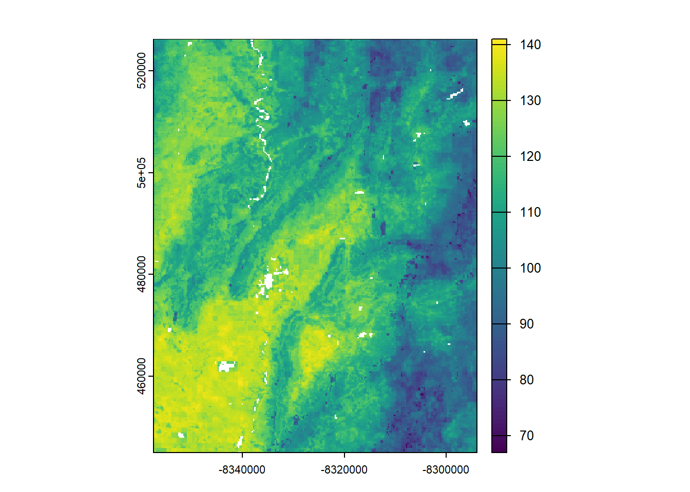
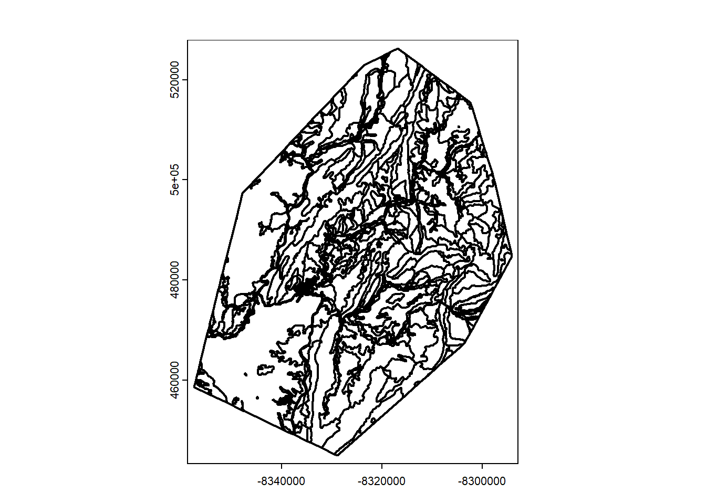

Generación de perfiles zonales virtuales a partir de SoilGrids
Author
Carlos M. Guío Blanco
Published
June 9, 2026
Este cuaderno de código extrae promedios zonales de las capas de SoilGrids (bdod, sand, silt, clay, soc) para Unidades Cartográficas de Suelo (UCS) del IGAC recortadas a un área de estudio. Luego convierte las unidades a las que espera SWAT, genera la tabla USERSOIL con los pedotransfer functions propios de SWAT+ y finalmente escribe un CSV listo para importar en el modelo.
Pasos principales:
Carga de librerías y datos (UCS, polígono de estudio, funciones externas)
Recorte de UCS al área de estudio y generación de ‘soil_id’ único
Descarga y recorte de las capas de SoilGrids vía VSI/GDAL
Extracción zonal con terra::extract() y unión de identificadores
Transformación a formato largo/ancho, conversión de unidades y limpieza
Creación de ‘perfiles virtuales’ con formato SWAT (e.g. SOL_Z#, SAND#, CLAY#, SOL_CBN#, SNAM…) 7. Exportación del CSV final (OUT_tabla_usersoil.csv) para SWAT+
# Exporta el cuaderno como script plano .R#knitr::purl("01_perfiles_zonales_SoilGrids_SWAT.qmd")# Para cargar librerias se verifica pacmanif ("pacman"%in%installed.packages() ==FALSE) install.packages("pacman")# Se cargan las libreriaspacman::p_load(char =c("Rdpack", #dependencia"here", #manejo de rutas"sf", #manipulación de dats espaciales"dplyr", #procesamiento de data frames"tidyr", #procesamient ode data frames"terra", #manejo de raster"remotes", #carga de librerias"devtools", #carga de librerias "ggplot2"#graficación ))#Instalar si es necesario#remotes::install_github("biopsichas/SWATprepR") #prepara datos para SWAT#devtools::install_github('tkdweber/euptf2') #dependencia, funciones de pedotransferencialibrary(SWATprepR)
Adjuntando el paquete: 'SWATprepR'
The following object is masked from 'package:terra':
interpolate
You have loaded plyr after dplyr - this is likely to cause problems.
If you need functions from both plyr and dplyr, please load plyr first, then dplyr:
library(plyr); library(dplyr)
The following objects are masked from 'package:dplyr':
arrange, count, desc, failwith, id, mutate, rename, summarise,
summarize
The following object is masked from 'package:here':
here
Cargando paquete requerido: stringr
Cargando paquete requerido: data.table
Adjuntando el paquete: 'data.table'
The following object is masked from 'package:terra':
shift
The following objects are masked from 'package:dplyr':
between, first, last
Cargando paquete requerido: ranger
# Ajusta tamaño de letra para las gráficas que genere el scripttheme(base_size =14)
List of 1
$ base_size: num 14
- attr(*, "class")= chr [1:2] "theme" "gg"
- attr(*, "complete")= logi FALSE
- attr(*, "validate")= logi TRUE
1. Carga y homogeneización de datos de polígonos
Los datos de polígonos se requieren para acotar el área de estudio (poli_estudio) y pára estimar propiedades dentro de UCS previamente definidas por el IGAC (poli_ucs). Se debe seleccionar el mapa de UCS con la escala mas detallada.
#Descarga mapa de ucs armonizadas para Colombia, escala 1:100k desde Zenodosource(here::here("Perfiles_SoilGrids", "Scripts", "00_funcion_descarga_ucs_armonizadas_gpkg.R"), encoding ="UTF-8")
Descargando archivo desde Zenodo con método 'curl'...
Tamaño del archivo descargado: 649.1 MB
Nombre de la capa encontrada: capa_ucs_100k
Archivo descargado y guardado en: C:\Users\cmguio\AppData\Local\Temp\RtmpSilGiD/igac_ucs_armonizado.gpkg
#ucs_sf se crea automáticamente al correr la función. Selecciona columnas y filas relevantespoli_ucs <- ucs_sf |> dplyr::select(UCSuelo, SUBGRUPO, PERFILES, PORCENTAJE, AREA_HA) |> sf::st_make_valid()# Descarga polígono de área de estudiopoli_estudio <- sf::st_read(here::here("Perfiles_SoilGrids", "Data", "INP_poligono_tocaima.geojson"))
Reading layer `poligono_tocaima' from data source
`C:\Users\cmguio\Documents\2024_SGC_SUEREC\PROYECTOS DE CODIGO\SGC_SUEREC\Perfiles_SoilGrids\Data\INP_poligono_tocaima.geojson'
using driver `GeoJSON'
Simple feature collection with 1 feature and 1 field
Geometry type: MULTIPOLYGON
Dimension: XY
Bounding box: xmin: -75.01233 ymin: 3.997444 xmax: -74.43316 ymax: 4.727522
Geodetic CRS: WGS 84
# Transformar ambos al CRS nativo de SoilGrids (IGH: EPSG:54052)wkt_igh <-'+proj=igh +lat_0=0 +lon_0=0 +datum=WGS84 +units=m +no_defs'poli_ucs_igh <- sf::st_transform(poli_ucs, wkt_igh)poli_estudio_igh <- sf::st_transform(poli_estudio, st_crs(poli_ucs_igh))# Se generan los datos para el área de estudioestudio_ucs_clip <- poli_ucs_igh |> sf::st_intersection(poli_estudio_igh) |># Recorta al área de estudio (\(x) x[!st_is_empty(x), ])() |># Quita geometrías vacías# Genera IDs únicos para enlazar luego con la tabla SWAT dplyr::mutate(ID =row_number(), # 1, 2, 3, …soil_id =sprintf("SOIL_%04d", ID) # "SOIL_0001", "SOIL_0002", … ) |>select(-id)
Warning: attribute variables are assumed to be spatially constant throughout
all geometries
#Verifica visualmenteplot(estudio_ucs_clip)

2. Carga de datos de SoilGrids
Se cargan los datos de valores promedio para varias propiedades. Los valores promedio es una de las estadístics reportadas en SoilGrids. Otras opciones son algunos quantiles o la incertidumbre.
Las propiedades así como los intervalos de profundidad que se eligen deben ser coherentes con el propósito del modelo y la información previa. Si en los polígonos de UCS (en la columna SUBGRUPO) se reportan oxisoles (sufijo ‘oxs’), ultisoles (sufijo ‘ults’), alfisoles (sufijo ‘alfs’) o andisoles (sufijo ‘ands’), deben considerarse las profundidades máximas. Si se presentan solo entisoles (sufijo ‘ents’) e inceptisoles (sufijo ‘epts’) puede trabajarse con profundidades máximas de 30 a 60 cm (verificar en la memoria de suelos).
bdod (Densidad aparente de la fracción fina del suelo): cg/cm³
cec (Capacidad de intercambio catiónico del suelo): mmol(c)/kg
cfvo (Fracción volumétrica de fragmentos gruesos (> 2 mm)): cm³/dm³
clay (Proporción de partículas de arcilla (< 0.002 mm) en la fracción fina): g/kg
nitrogen (Nitrógeno total (N)): cg/kg
phh2o (pH del suelo en agua): pH x10
sand (Proporción de partículas de arena (> 0.05/0.063 mm) en la fracción fina): g/kg
silt (Proporción de partículas de limo (≥ 0.002 mm y ≤ 0.05/0.063 mm) en la fracción fina): g/kg
soc (Contenido de carbono orgánico del suelo en la fracción fina):dg/kg
ocd (Densidad de carbono orgánico): hg/m³
ocs (Reservas de carbono orgánico): t/ha
# Crea un objeto tipo función al ejecutar un script externosource("00_funcion_descarga_soilgrids.R")# Se llama la función con los argumentos adaptados al proyectostack_suelo <-descargar_soilgrids_stack(vars =c("bdod", "sand", "silt", "clay", "soc"),depths =c("0-5cm", "5-15cm", "15-30cm", "60-100cm"),stats =c("mean"),resolucion =c(250, 250),#define ruta de descarga y verifica si ya existen los archivosruta_vrt = here::here("Perfiles_SoilGrids", "Data", "OUT_SoilGrids_vrt") )
Warning in descargar_soilgrids_stack(vars = c("bdod", "sand", "silt", "clay", : El sistema de referencia de coordenadas (CRS) por defecto es Homosínclico Mundial (EPSG:54052).
El bounding box proporcionado está en metros sobre este CRS.
Si se desea trabajar en EPSG:4326 u otro CRS geográfico, reproyectar después con `terra::project()`.
Procesando: bdod_0-5cm_mean
Usando VRT existente: C:/Users/cmguio/Documents/2024_SGC_SUEREC/PROYECTOS DE CODIGO/SGC_SUEREC/Perfiles_SoilGrids/Data/OUT_SoilGrids_vrt/bdod_0-5cm_mean.vrt
Procesando: bdod_5-15cm_mean
Usando VRT existente: C:/Users/cmguio/Documents/2024_SGC_SUEREC/PROYECTOS DE CODIGO/SGC_SUEREC/Perfiles_SoilGrids/Data/OUT_SoilGrids_vrt/bdod_5-15cm_mean.vrt
Procesando: bdod_15-30cm_mean
Usando VRT existente: C:/Users/cmguio/Documents/2024_SGC_SUEREC/PROYECTOS DE CODIGO/SGC_SUEREC/Perfiles_SoilGrids/Data/OUT_SoilGrids_vrt/bdod_15-30cm_mean.vrt
Procesando: bdod_60-100cm_mean
Usando VRT existente: C:/Users/cmguio/Documents/2024_SGC_SUEREC/PROYECTOS DE CODIGO/SGC_SUEREC/Perfiles_SoilGrids/Data/OUT_SoilGrids_vrt/bdod_60-100cm_mean.vrt
Procesando: sand_0-5cm_mean
Usando VRT existente: C:/Users/cmguio/Documents/2024_SGC_SUEREC/PROYECTOS DE CODIGO/SGC_SUEREC/Perfiles_SoilGrids/Data/OUT_SoilGrids_vrt/sand_0-5cm_mean.vrt
Procesando: sand_5-15cm_mean
Usando VRT existente: C:/Users/cmguio/Documents/2024_SGC_SUEREC/PROYECTOS DE CODIGO/SGC_SUEREC/Perfiles_SoilGrids/Data/OUT_SoilGrids_vrt/sand_5-15cm_mean.vrt
Procesando: sand_15-30cm_mean
Usando VRT existente: C:/Users/cmguio/Documents/2024_SGC_SUEREC/PROYECTOS DE CODIGO/SGC_SUEREC/Perfiles_SoilGrids/Data/OUT_SoilGrids_vrt/sand_15-30cm_mean.vrt
Procesando: sand_60-100cm_mean
Usando VRT existente: C:/Users/cmguio/Documents/2024_SGC_SUEREC/PROYECTOS DE CODIGO/SGC_SUEREC/Perfiles_SoilGrids/Data/OUT_SoilGrids_vrt/sand_60-100cm_mean.vrt
Procesando: silt_0-5cm_mean
Usando VRT existente: C:/Users/cmguio/Documents/2024_SGC_SUEREC/PROYECTOS DE CODIGO/SGC_SUEREC/Perfiles_SoilGrids/Data/OUT_SoilGrids_vrt/silt_0-5cm_mean.vrt
Procesando: silt_5-15cm_mean
Usando VRT existente: C:/Users/cmguio/Documents/2024_SGC_SUEREC/PROYECTOS DE CODIGO/SGC_SUEREC/Perfiles_SoilGrids/Data/OUT_SoilGrids_vrt/silt_5-15cm_mean.vrt
Procesando: silt_15-30cm_mean
Usando VRT existente: C:/Users/cmguio/Documents/2024_SGC_SUEREC/PROYECTOS DE CODIGO/SGC_SUEREC/Perfiles_SoilGrids/Data/OUT_SoilGrids_vrt/silt_15-30cm_mean.vrt
Procesando: silt_60-100cm_mean
Usando VRT existente: C:/Users/cmguio/Documents/2024_SGC_SUEREC/PROYECTOS DE CODIGO/SGC_SUEREC/Perfiles_SoilGrids/Data/OUT_SoilGrids_vrt/silt_60-100cm_mean.vrt
Procesando: clay_0-5cm_mean
Usando VRT existente: C:/Users/cmguio/Documents/2024_SGC_SUEREC/PROYECTOS DE CODIGO/SGC_SUEREC/Perfiles_SoilGrids/Data/OUT_SoilGrids_vrt/clay_0-5cm_mean.vrt
Procesando: clay_5-15cm_mean
Usando VRT existente: C:/Users/cmguio/Documents/2024_SGC_SUEREC/PROYECTOS DE CODIGO/SGC_SUEREC/Perfiles_SoilGrids/Data/OUT_SoilGrids_vrt/clay_5-15cm_mean.vrt
Procesando: clay_15-30cm_mean
Usando VRT existente: C:/Users/cmguio/Documents/2024_SGC_SUEREC/PROYECTOS DE CODIGO/SGC_SUEREC/Perfiles_SoilGrids/Data/OUT_SoilGrids_vrt/clay_15-30cm_mean.vrt
Procesando: clay_60-100cm_mean
Usando VRT existente: C:/Users/cmguio/Documents/2024_SGC_SUEREC/PROYECTOS DE CODIGO/SGC_SUEREC/Perfiles_SoilGrids/Data/OUT_SoilGrids_vrt/clay_60-100cm_mean.vrt
Procesando: soc_0-5cm_mean
Usando VRT existente: C:/Users/cmguio/Documents/2024_SGC_SUEREC/PROYECTOS DE CODIGO/SGC_SUEREC/Perfiles_SoilGrids/Data/OUT_SoilGrids_vrt/soc_0-5cm_mean.vrt
Procesando: soc_5-15cm_mean
Usando VRT existente: C:/Users/cmguio/Documents/2024_SGC_SUEREC/PROYECTOS DE CODIGO/SGC_SUEREC/Perfiles_SoilGrids/Data/OUT_SoilGrids_vrt/soc_5-15cm_mean.vrt
Procesando: soc_15-30cm_mean
Usando VRT existente: C:/Users/cmguio/Documents/2024_SGC_SUEREC/PROYECTOS DE CODIGO/SGC_SUEREC/Perfiles_SoilGrids/Data/OUT_SoilGrids_vrt/soc_15-30cm_mean.vrt
Procesando: soc_60-100cm_mean
Usando VRT existente: C:/Users/cmguio/Documents/2024_SGC_SUEREC/PROYECTOS DE CODIGO/SGC_SUEREC/Perfiles_SoilGrids/Data/OUT_SoilGrids_vrt/soc_60-100cm_mean.vrt
Se valida que los archivos se cargaron correctamente.
# Validación rápida: nombres y visualprint(names(stack_suelo))
# Selecciona algunas capas por número de índicestack_sub <- stack_suelo[[c(1, 8, 15)]]# Grafica solo esas capas (en un mismo panel multi-cuadro)plot(stack_sub)

Para acelerar el cálculo se sugiere guardar el archivo tif localmente. Esto se hace si no hay interferencia con GDAL
# Definir la ruta de salidaout_raster <- here::here("Perfiles_SoilGrids", "Data", "OUT_stack_soilgrids.tif")# Verificar si el archivo ya existe antes de escribirif (!file.exists(out_raster)) {writeRaster(stack_suelo, filename = out_raster, overwrite =TRUE)} else {message("El archivo ya existe, no se sobrescribirá.")}
El archivo ya existe, no se sobrescribirá.
# LEE el .tif guardado —esto ya es solo un archivo físico pequeñostack_suelo_tif <-rast(out_raster)# Verifica cargaplot(stack_suelo_tif[[1]])

3. Generación de propiedades por estadística zonal
Para generar datos de perfiles virtuales representativos se utiliza un método de estadísticas zonales, el cuál debe usarse principalmente cuando los mapas de suelos tengan escalas detalladas y semidetalladas (> 1:50.000), en los que predominan las consociaciones o asociaciones de fácil diferenciación. Para las escalas más generales, se sugiere contrastar el resultado de la estadística zonal con el -segundo- método: por agrupamiento no supervisado (ver script 02_perfiles_agrupamiento_SoilGrids_SWAT).
3.1 Cálculo de propiedades promedio por polígono de UCS
OPCIONAL: se recorta el stack al área de estudio para un procesado mas eficiente
# (Si es necesario) Proyecta el stack a CRS de los UCScrs_estudio_ucs <- terra::crs(estudio_ucs_clip)if (terra::crs(stack_suelo_tif) != crs_estudio_ucs) { stack_suelo_tif <- terra::project(stack_suelo_tif, crs_estudio_ucs, method ="bilinear")} else { stack_suelo_tif <- stack_suelo_tif}
# Transforma UCS a SpatVector, el formato vectorial de Terraestudio_ucs_vect <-vect(estudio_ucs_clip)# Recorta al área de interésext <- terra::ext(estudio_ucs_vect)stack_suelo_crop <- terra::crop(stack_suelo_tif, ext)# Verificaciónplot(stack_suelo_crop[[1]])

plot(estudio_ucs_vect, border ="black", lwd =2)

Con este método se calculan perfiles promedio por polígono. La tabla resultante debe procesarse posteriormente para ajustarse al formato de SWAT.
# Extracción con terra::extract(), une soil_id:tabla_zonal <- terra::extract( stack_suelo_crop,vect(estudio_ucs_clip),fun = mean,na.rm =TRUE ) |># st_drop_geometry() para traer sólo ID + soil_id, desde sfleft_join( estudio_ucs_clip |>st_drop_geometry() |>select(ID, soil_id),by ="ID" ) |>select(-ID)# tabla_zonal: una fila por polígono, columnas = capas + IDhead(tabla_zonal)
Se transforma la tabla zonal a formato largo. Se crean columnas de acuerdo a los nombres de las capas raster del stack. Por ejemplo el nombre de capa sand_0-5cm_mean, permite crear nuevas columnas y llenarlas: property (sand), top (0), base (5), stat (mean).
# Pivot a formato largo, **incluyendo soil_id** desde el primer pasotabla_long <- tabla_zonal |>pivot_longer(cols =-c(soil_id),names_to =c("property", "depth", "stat"),names_pattern="([a-z]+)_([0-9]+-[0-9]+)cm_(mean|Q0\\.5|Q0\\.05|Q0\\.95|uncertainty)" ) |># Extrae top y bottom de la cadena depthmutate(top =as.numeric(sub("([0-9]+)-([0-9]+)", "\\1", depth)),bottom =as.numeric(sub("([0-9]+)-([0-9]+)", "\\2", depth)) ) |># Selecciona en orden, incluyendo soil_idselect(soil_id, property, stat, value, top, bottom) |># Elimina los cuerpos de agua (filas donde value era NA)drop_na(value)# Comprueba el resultadohead(tabla_long, 10)
# A tibble: 10 × 6
soil_id property stat value top bottom
<chr> <chr> <chr> <dbl> <dbl> <dbl>
1 SOIL_0001 bdod mean 135 0 5
2 SOIL_0001 bdod mean 140. 5 15
3 SOIL_0001 bdod mean 142. 15 30
4 SOIL_0001 bdod mean 146 60 100
5 SOIL_0001 sand mean 295 0 5
6 SOIL_0001 sand mean 286. 5 15
7 SOIL_0001 sand mean 260. 15 30
8 SOIL_0001 sand mean 256. 60 100
9 SOIL_0001 silt mean 396 0 5
10 SOIL_0001 silt mean 383 5 15
3.2 Ajuste a formato SWAT
El modelo SWAT requiere las siguientes columnas:
soil_id (ID por polígono de UCS)
top (cm)
bottom (cm)
sand (%)
silt (%)
clay (%)
soc (g/kg o % según el modelo, revisar unidad esperada)
Otras como
bulk density (g/cm³)
pH
El siguiente bloque genera una tabla de equivalencias, que permite que se haga posteriormente la conversión de unidades.
# Tabla de conversión: de unidad de SoilGrids a unidad SWAT# Solo propiedades que interesan a SWATtabla_conversion_unidades <- tibble::tribble(~property, ~unidad_soilgrids, ~unidad_swat, ~factor_conversion, ~nota,"sand", "g/kg", "%", 0.1, "Dividir entre 10","silt", "g/kg", "%", 0.1, "Dividir entre 10","clay", "g/kg", "%", 0.1, "Dividir entre 10","soc", "dg/kg", "%", 0.01, "Dividir entre 100","bdod", "cg/cm³", "g/cm³", 0.01, "Dividir entre 100","phh2o", "pH x10", "pH", 0.1, "Dividir entre 10","cec", "mmol(c)/kg", "cmol(+)/kg", 0.1, "Dividir entre 10","nitrogen", "cg/kg", "g/kg", 0.01, "Dividir entre 100")tabla_conversion_unidades
# A tibble: 8 × 5
property unidad_soilgrids unidad_swat factor_conversion nota
<chr> <chr> <chr> <dbl> <chr>
1 sand g/kg % 0.1 Dividir entre 10
2 silt g/kg % 0.1 Dividir entre 10
3 clay g/kg % 0.1 Dividir entre 10
4 soc dg/kg % 0.01 Dividir entre 100
5 bdod cg/cm³ g/cm³ 0.01 Dividir entre 100
6 phh2o pH x10 pH 0.1 Dividir entre 10
7 cec mmol(c)/kg cmol(+)/kg 0.1 Dividir entre 10
8 nitrogen cg/kg g/kg 0.01 Dividir entre 100
Se hace la conversión de unidades reportadas por SoilGrids a las que reuiqere SWAT.
tabla_long_swat <- tabla_long|>left_join(tabla_conversion_unidades, by ="property") |>mutate(value_swat =if_else(!is.na(factor_conversion), value * factor_conversion, value) ) |>select(soil_id, property, stat, value_swat, top, bottom)
Se transforma de nuevo la tabla de datos a formato ancho, con el fin de tener columnas por propiedad y filas por soil_id y horizonte.
perfil_wide <- tabla_wide_swat |># Ordena por soil_id y por la profundidad “top” de cada capaarrange(soil_id, top) |># Agrupa por cada perfil de suelo (soil_id) para numerar horizontesgroup_by(soil_id) |> dplyr::mutate(layer_num =row_number(), #layer_num = 1,2,3… según el orden de topNLAYERS =n() # cuenta horizontes por soil_id ) |>ungroup() |># Selecciona y renombra las columnas que SWATprepR necesita:select(SNAM = soil_id, layer_num, NLAYERS, SOL_Z = bottom,SAND = sand,SILT = silt,CLAY = clay,SOL_CBN = soc,SOL_BD = bdod ) |># Transforma de “larga” a “ancha”: cada layer_num pasa a columnas numeradaspivot_wider(names_from = layer_num,values_from =c(SOL_Z, SAND, SILT, CLAY, SOL_CBN, SOL_BD),names_sep ="" ) head(perfil_wide)
Se completan parámetros faltantes con SWATprepR, y se exporta la tabla para ingesta en SWAT.
# Escribe “perfil_wide” a CSV en archivo temporal para que get_usersoil_table() lo lea:ruta_temp <-tempfile(pattern ="perfil_wide_", fileext =".csv")write.csv( perfil_wide, ruta_temp,row.names =FALSE,quote =FALSE)# 3. Llama a get_usersoil_table() pasándole la ruta del CSV:usersoil_tbl <- SWATprepR::get_usersoil_table( ruta_temp, # ← ahora sí es una cadena (path al CSV)hsg =FALSE,keep_values =FALSE,nb_lyr =4# número de horizontes por perfil)#Se verificahead(usersoil_tbl)
# Ruta de salida para el GeoJSON (o cambia la extensión a .shp para Shapefile)out_ucspoly <- here::here("Perfiles_SoilGrids", "Data", "OUT_ucs_soil_id.geojson")out_soil_tbl <- here::here("Perfiles_SoilGrids", "Data", "OUT_tabla_usersoil.csv")# Si el fichero ya existe, elimínalo manualmenteif (file.exists(out_ucspoly)) {file.remove(out_ucspoly)}
[1] TRUE
# Escribe tu GeoJSON limpiosf::st_write( estudio_ucs_clip, # o estudio_ucs_clip2 si filtraste columnas out_ucspoly,driver ="GeoJSON")
Writing layer `OUT_ucs_soil_id' to data source
`C:/Users/cmguio/Documents/2024_SGC_SUEREC/PROYECTOS DE CODIGO/SGC_SUEREC/Perfiles_SoilGrids/Data/OUT_ucs_soil_id.geojson' using driver `GeoJSON'
Writing 520 features with 7 fields and geometry type Unknown (any).
write.csv( usersoil_tbl, out_soil_tbl)message("Polígonos y tabla exportados en: ", here::here("Perfiles_SoilGrids", "Data"))
Polígonos y tabla exportados en: C:/Users/cmguio/Documents/2024_SGC_SUEREC/PROYECTOS DE CODIGO/SGC_SUEREC/Perfiles_SoilGrids/Data